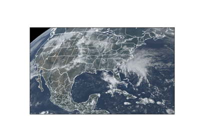

goesutils Maps
¶
This section houses examples on how to make maps.

Plot Truecolor Approximation
Plot Truecolor Approximation
goesutils
Navigation
Table of Contents
goesutils User’s Guide
goesutils Example Gallery
goesutils Basics
goesutils Maps
goesutils package
goesutils
Related Topics
Documentation overview
goesutils Example Gallery
Previous:
Find and Retrieve Files
Next:
Plot Truecolor Approximation
Quick search